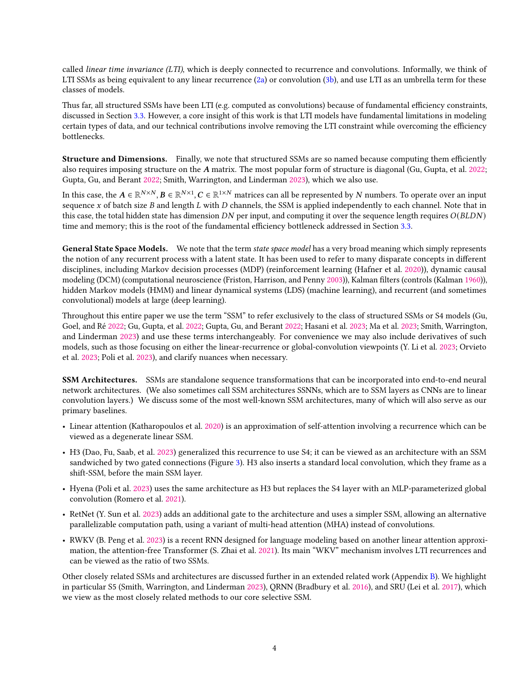

text #1called linear time invariance (LTI), which is deeply connected to recurrence and convolutions. Informally, we think of
text #2LTI SSMs as being equivalent to any linear recurrence (2a) or convolution (3b), and use LTI as an umbrella term for these
text #3classes of models.
text #4Thus far, all structured SSMs have been LTI (e.g. computed as convolutions) because of fundamental efficiency constraints,
text #5discussed in Section 3.3. However, a core insight of this work is that LTI models have fundamental limitations in modeling
text #6certain types of data, and our technical contributions involve removing the LTI constraint while overcoming the efficiency
text #7bottlenecks.
text #8Finally, we note that structured SSMs are so named because computing them efficiently
text #9Structure and Dimensions.
text #10also requires imposing structure on the 𝑨matrix. The most popular form of structure is diagonal (Gu, Gupta, et al. 2022;
text #11Gupta, Gu, and Berant 2022; Smith, Warrington, and Linderman 2023), which we also use.
text #12In this case, the 𝑨∈R𝑁×𝑁, 𝑩∈R𝑁×1, 𝑪∈R1×𝑁matrices can all be represented by 𝑁numbers. To operate over an input
text #13sequence 𝑥of batch size 𝐵and length 𝐿with 𝐷channels, the SSM is applied independently to each channel. Note that in
text #14this case, the total hidden state has dimension 𝐷𝑁per input, and computing it over the sequence length requires 𝑂(𝐵𝐿𝐷𝑁)
text #15time and memory; this is the root of the fundamental efficiency bottleneck addressed in Section 3.3.
text #16General State Space Models.
text #17We note that the term state space model has a very broad meaning which simply represents
text #18the notion of any recurrent process with a latent state. It has been used to refer to many disparate concepts in different
text #19disciplines, including Markov decision processes (MDP) (reinforcement learning (Hafner et al. 2020)), dynamic causal
text #20modeling (DCM) (computational neuroscience (Friston, Harrison, and Penny 2003)), Kalman filters (controls (Kalman 1960)),
text #21hidden Markov models (HMM) and linear dynamical systems (LDS) (machine learning), and recurrent (and sometimes
text #22convolutional) models at large (deep learning).
text #23Throughout this entire paper we use the term “SSM” to refer exclusively to the class of structured SSMs or S4 models (Gu,
text #24Goel, and Ré 2022; Gu, Gupta, et al. 2022; Gupta, Gu, and Berant 2022; Hasani et al. 2023; Ma et al. 2023; Smith, Warrington,
text #25and Linderman 2023) and use these terms interchangeably. For convenience we may also include derivatives of such
text #26models, such as those focusing on either the linear-recurrence or global-convolution viewpoints (Y. Li et al. 2023; Orvieto
text #27et al. 2023; Poli et al. 2023), and clarify nuances when necessary.
text #28SSM Architectures.
text #29SSMs are standalone sequence transformations that can be incorporated into end-to-end neural
text #30network architectures. (We also sometimes call SSM architectures SSNNs, which are to SSM layers as CNNs are to linear
text #31convolution layers.) We discuss some of the most well-known SSM architectures, many of which will also serve as our
text #32primary baselines.
text #33• Linear attention (Katharopoulos et al. 2020) is an approximation of self-attention involving a recurrence which can be
text #34viewed as a degenerate linear SSM.
text #35• H3 (Dao, Fu, Saab, et al. 2023) generalized this recurrence to use S4; it can be viewed as an architecture with an SSM
text #36sandwiched by two gated connections (Figure 3). H3 also inserts a standard local convolution, which they frame as a
text #37shift-SSM, before the main SSM layer.
text #38• Hyena (Poli et al. 2023) uses the same architecture as H3 but replaces the S4 layer with an MLP-parameterized global
text #39convolution (Romero et al. 2021).
text #40• RetNet (Y. Sun et al. 2023) adds an additional gate to the architecture and uses a simpler SSM, allowing an alternative
text #41parallelizable computation path, using a variant of multi-head attention (MHA) instead of convolutions.
text #42• RWKV (B. Peng et al. 2023) is a recent RNN designed for language modeling based on another linear attention approxi-
text #43mation, the attention-free Transformer (S. Zhai et al. 2021). Its main “WKV” mechanism involves LTI recurrences and
text #44can be viewed as the ratio of two SSMs.
text #45Other closely related SSMs and architectures are discussed further in an extended related work (Appendix B). We highlight
text #46in particular S5 (Smith, Warrington, and Linderman 2023), QRNN (Bradbury et al. 2016), and SRU (Lei et al. 2017), which
text #47we view as the most closely related methods to our core selective SSM.
text #484